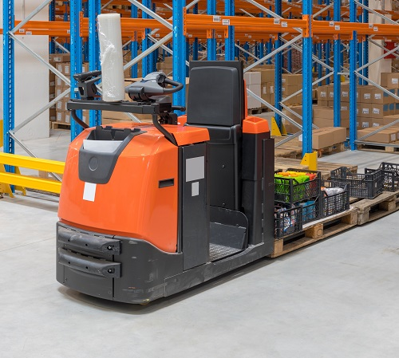
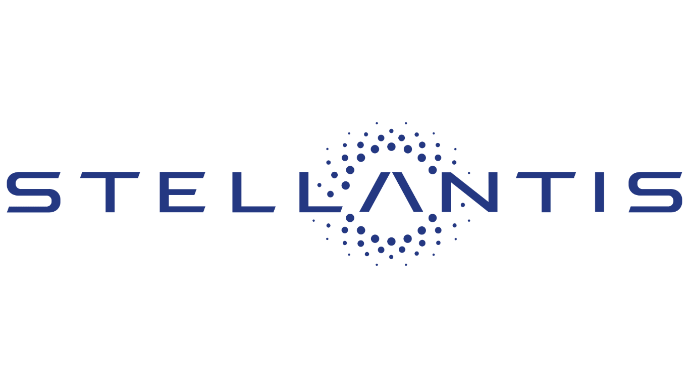

EXPÉRIENCE PROFESSIONNELLE / JUILLET 2025
Stage ouvrier cariste
Un stage d’un mois chez Stellantis à Poissy pour découvrir le monde industriel, ses règles de sécurité et l’organisation des flux qui alimentent les lignes de production.

01 / Le contexte
Découvrir le milieu industriel
Ce stage ouvrier d’un mois chez Stellantis, à Poissy, m’a permis de découvrir le fonctionnement d’un site industriel. J’ai été sensibilisé aux règles et aux consignes de sécurité, ainsi qu’à l’organisation du travail et aux besoins d’approvisionnement des lignes de production.

02 / Les missions
Approvisionner les lignes de production
Formé à la conduite, j’ai obtenu le CACES 2B et travaillé comme ouvrier cariste. Mes missions consistaient à charger mon chariot avec des matériaux, des pièces et des caisses de composants pour véhicules, puis à les distribuer aux lignes de production en suivant différents parcours sur le site.
- Charger le chariot avec les matériaux et composants nécessaires.
- Suivre les parcours définis pour acheminer les caisses vers les lignes.
- Respecter les consignes de circulation et de sécurité en milieu industriel.
03 / Les enseignements
Comprendre les contraintes de la production
Cette expérience m’a permis de mieux comprendre comment s’organisent les lignes de production et l’importance d’un approvisionnement régulier. J’ai découvert concrètement le rythme, les contraintes de sécurité et la coordination nécessaires au fonctionnement quotidien d’un environnement industriel.